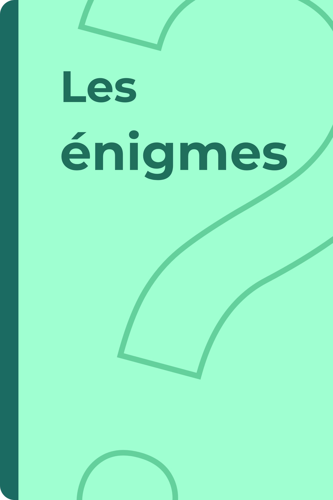

Cette collection est librement inspirée des énigmes de la Méthode Heuristique de Mathématiques (MHM), dont je recommande vivement le travail. Les fiches ont été adaptées pour une utilisation en SEGPA : présentation simplifiée, vocabulaire parfois allégé et supports entièrement photocopiables afin que les élèves puissent conserver une trace de leur travail dans leur cahier.